خلفيات لصفحات الويب...
بلمح البصر
[المقدمة]
[لنتعرف...]
[الأدوات]
[الألوان]
[التحديد]
[إلغاء التدرج]
[New Image]
[فرشاة الرسم]
[التجانب]
[خلفيات الصفحات]
أهلاً وسهلاً بك إلى هذا الدرس... الذي سيكون أحد الدروس التطبيقية لبرنامج PSP. وفيه ستتعلم كيفية عمل خلفيات لصفحات الويب بطرق بسيطة وبلمح البصر. معتمداً على معرفتك المسبقة بأساسيات البرنامج واستخدام فرشاة الرسم.
ولنبدأ فوراً
إليك أولاً هذه المجموعة من خلفيات الصفحات، وهي عيّنة لما سيكون بإمكانك عمله مع نهاية هذا الدرس. وتلاحظ أسفل كل صورة اسم نقش الفرشاة المستخدم في رسمها.
(إذا أردت حفظ أي من هذه الصور لديك، ضع مؤشر الفأرة عليها ثم أنقر بالزر الأيمن، واختر الأمر Save Picture As...)
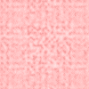 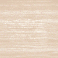 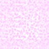 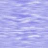 Coarse Canvas Woodgrain Sidewalk Ocean 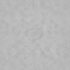 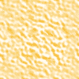 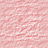 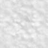 Fog Fruit Lava Lunar 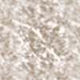 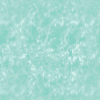 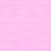 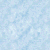 Marble Marsh Spheres Clouds
كما تتوقع، لن أقوم بسرد الخطوات الخاصة بكل واحدة من هذه الخلفيات. بل سأقوم بذكر الخطوات الرئيسية فقط ومن ثمّ أترك العنان لخيالك (ولفرشاة الرسم أيضاً) لعملها، بل وعمل مئات غيرها.
خطوات عمل خلفيات للصفحات باستخدام فرشاة الرسم.
اختر الأمر New من قائمة File لبدء العمل في ملف جديد.
حدّد مواصفات الصورة المطلوبة في صندوق الحوار وخصوصاً الأبعاد. ولا تنس أن تحسب حساباً لإقتصاص 30% من هذه الأبعاد عند تحويلها لصورة قابلة للتجانب (قمت باختيار 150,150 لكي أحصل في النهاية على صورٍ أبعادها 100,100). وقم أيضاً بتحديد لون الخلفية.
حدّد اللون الأمامي للرسم من لوحة الألوان.
اختر أداة الرسم (الفرشاة).
من لوحة التحكم حدّد النقش الذي ترغبه.
حدّد القيم الخاصة بخصائص الفرشاة.
باشر بعملية الرسم في الصورة بحيث تملؤها.
طبق خاصية التجانب كما تعلمت في درس سابق.
إحفظ الصورة في ملف بأحد التنسيقين GIF أو JPG.
إليك الآن هذه المجموعة الثانية من الخلفيات...
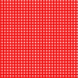 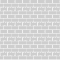 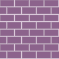 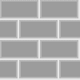 Dither 75% Small Bricks Medium Bricks Large Bricks 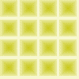 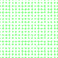 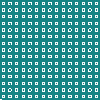 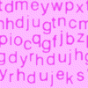 Daze Fine Canvas Grid Letters 2
هل تلاحظ القاسم المشترك فيما بينها؟... إن النقوش المستخدمة فيها هي نقوش ذات طبيعة رتيبة ومتكررة وليست عشوائية كما في المجموعة الأولى. وهذا يجعل من عملية التعامل معها مختلفة قليلاً. وأول هذه الإختلافات هو عدم الحاجة إلى تحويلها لتصبح قابلة للتجانب. (بشرط أن تتبع الخطوات التالية بحذافيرها):
حدّد أبعاد الصورة 100,100 (أو أي أبعاد تقبل القسمة على 25).
اختر الشكل المربع للفرشاة كما وحدّد حجمها ليكون 100.
حدّد الخصائص الأخرى ولون الرسم كما تريدها.
ضع المؤشر في منتصف الصورة تماماً (لاحظ الإحداثيات الموجودة على يسار شريط المعلومات في أسفل نافذة البرنامج، حيث يجب أن تكون 50,50)
أنقر زر الفأرة، وإذا أردت توضيح اللون أكثر قم بالنقر مرات أخرى دون أن تحرك المؤشر.
احفظ الصورة.
تلميحات:
للحصول على أشكال متنوعة من الخلفيات حاول ما يلي:
عند تحديدك لمواصفات الصورة في البداية، حدّد ألواناً مختلفة للخلفية.
اختر نقوشاً مختلفة لفرشاة الرسم.
قم بتغيير القيم الخاصة بالتعتيم والشدّة والكثافة.
اختر أشكالاً مختلفة لفرشاة الرسم ولا تنس الأشكال الإضافية والمخصصة الموجودة في لوحة التحكم، ضمن زر Brush Options.
استخدم عدّة ألوان بصورة متعاقبة للرسم في نفس الصورة.
أدعو الله أن يوفقك دائماً في عمل رسومات رائعة.

| إتش.بي بالعربية © 1998-1999 يحيى الشريف |
H.P in arabic © 1998-1999 Yahya Al-Sharif |